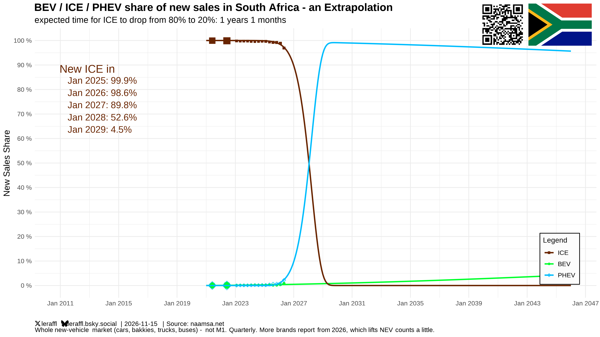
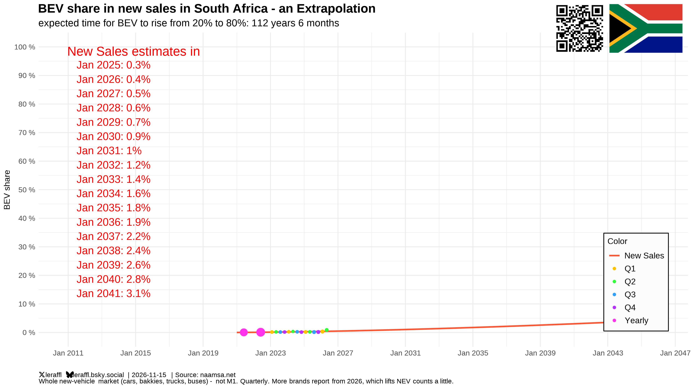
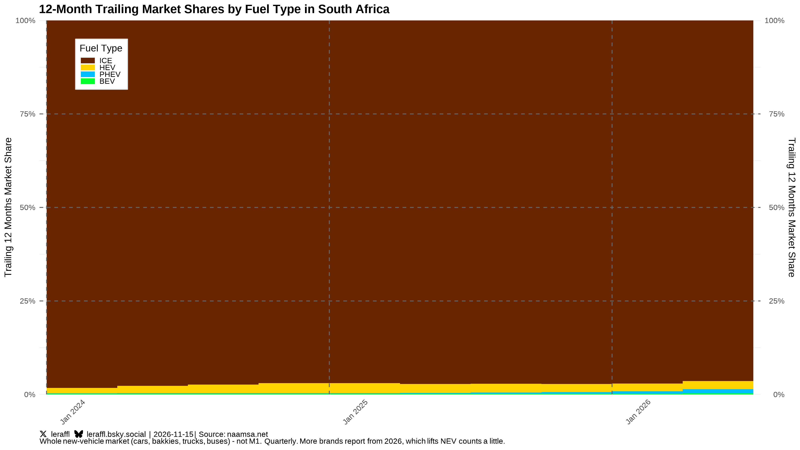
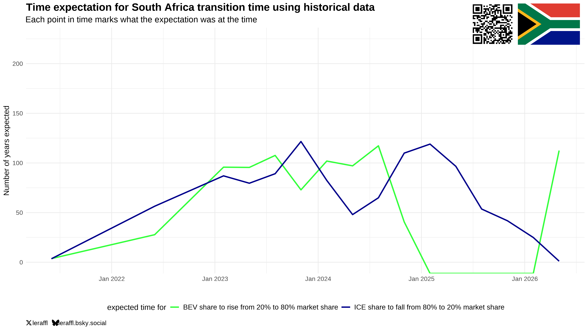

Data through May 2026 · curve fitted 2026-11-15 File
Lost share: Petrol, diesel and other combustion 0.8. Gained: Plug-in hybrid 0.8. In percentage points of all new registrations.
Share of new registrations in the last four quarters (Jun 2025 to May 2026) against the four quarters before (Jun 2024 to May 2025). The changes add up to zero: what one row gains, the others lose. A row appears only where the source fills that column in every period of both windows; everything else is in the last row.
| Period | All registrations | BEV | BEV % | PHEV % | HEV % | All other % |
|---|---|---|---|---|---|---|
| Quarter to May 2026 | 153,119 | 1,353 | 0.88 | 2.2 | 2.6 | 94.4 |
| Quarter to Feb 2026 | 161,946 | 544 | 0.34 | 0.79 | 1.7 | 97.2 |
| Quarter to Nov 2025 | 159,917 | 286 | 0.18 | 0.64 | 2.2 | 97.0 |
| Quarter to Aug 2025 | 158,125 | 232 | 0.15 | 0.63 | 2.3 | 97.0 |
| Quarter to May 2025 | 135,021 | 294 | 0.22 | 0.41 | 2.1 | 97.3 |
| Quarter to Feb 2025 | 144,132 | 276 | 0.19 | 0.17 | 2.1 | 97.6 |
| Quarter to Nov 2024 | 138,106 | 184 | 0.13 | 0.19 | 3.0 | 96.7 |
| Quarter to Aug 2024 | 132,195 | 324 | 0.25 | 0.13 | 2.5 | 97.1 |
| Quarter to May 2024 | 114,887 | 419 | 0.36 | 0.14 | 3.1 | 96.4 |
| Quarter to Feb 2024 | 130,735 | 330 | 0.25 | 0.11 | 2.0 | 97.7 |
| Quarter to Nov 2023 | 130,550 | 209 | 0.16 | 0.09 | 1.7 | 98.1 |
| Quarter to Aug 2023 | 135,396 | 218 | 0.16 | 0.09 | 1.3 | 98.5 |
| Quarter to May 2023 | 127,203 | 270 | 0.21 | 0.07 | 0.92 | 98.8 |
Shares are the column divided by the source's own total. The last column is what remains after the columns to its left. Newest first.
The series shows no transition yet, so the curve carries no dates.
The gallery fits a generalized Weibull curve to the BEV share of each period: share(t) = 1 − exp(v1 · (t − t0)v2), t in calendar years. For South Africa: v1 = −1.916 × 10−4, v2 = 1.671, t0 = 2020, fitted through June 2026, model run 2026-11-15. This is the project's own model, not an official forecast. A policy change or a stall is not in it.

Combustion, battery electric and hybrid curves
BEV share with the fitted curve
Market split, trailing twelve months
Time to reach each BEV shareRendered 2026-11-15 from data through Jun 2026. Charts are CC BY 4.0; open one for the full size.
Quarterly new-vehicle sales in South Africa with naamsa's battery-electric, plug-in hybrid and hybrid counts, read automatically from naamsa's Quarterly Review of Business Conditions. The split exists only for the whole new-vehicle market — cars, bakkies, minibuses, trucks and buses together — not for passenger cars alone.
Go and check the numbers yourself:
naamsa — Quarterly Review of Business Conditions (New energy vehicle sales) ↗
naamsa's website is WordPress; its media library answers a public JSON search. The fetcher asks it for "Review of Business Conditions" PDFs (one small request), keeps one file per upload date (naamsa sometimes uploads a signed and an unsigned copy) and reads the quarter from the file name. When that quarter is already in the chart it stops there.
The PDF is turned into text and two things are read from it. Section 7 states the quarter's aggregate new passenger car sales and aggregate commercial vehicle sales, with the same quarter a year earlier. The NEV section has a table with one line per drivetrain, by year and for the quarter and the year-ago quarter. Every column of that table must add up to its "Total NEVs" line, or the review is not used.
naamsa's table covers every new vehicle the reporting brands sell — it has no segment split, so nothing is reclassified here and the chart is the whole market, not passenger cars.
TOTAL is passenger plus commercial sales of the quarter; ICE is TOTAL minus BEV, PHEV and HEV. The row sits on the quarter's middle month. Every review repeats the year-ago quarter, often slightly revised — reviews are read oldest first, so the newest figure wins.
For every year whose four quarters and annual column are known, the quarters must add up to the year (within a few units — naamsa's restatements). If they only add up with one quarter's plug-in and hybrid values exchanged, that quarter was printed in the wrong rows and is swapped back; otherwise the gap is reported and the published values stay. The newest quarter's total must be at least 75% of the same quarter a year earlier (a warning below 90%).
Each new or changed month re-renders the country. Shares are read from the CSV as column ÷ TOTAL and grouped into three curves. A generalized Weibull S-curve is fitted to the BEV and the ICE share, and the charts, the fitted parameters, the twelve-month totals and the uncertainty bands are rewritten.
| Acquisition | File — downloaded as a data file (XLSX / Parquet / ODS / zip) |
|---|---|
| Vehicle scope | New vehicles sold in South Africa per quarter, every segment naamsa covers, as reported by the brands that report to naamsa / Lightstone Auto (30 brands for the NEV table in 2026). Exports are not included. The battery-electric share of new passenger cars alone is not published and is higher than the share shown here, because trucks, bakkies and buses are in the denominator. |
| HEV (full hybrids) | naamsa reports "Traditional hybrid" (HEV, including mild hybrids as the brands report them) and "Plug-in hybrid" (PHEV) as separate lines; range-extender EVs are not separated and sit wherever the brand reports them. |
| Backfill | quarterly from 2023-Q1 out of the reviews naamsa's media library holds (2024-Q1 review onward — each review repeats the year-ago quarter); 2021 and 2022 as yearly rows on the mid-year month. Earlier years exist as NEV counts (2019, 2020) but without a published total-market figure in the same scope, so they are left out. |
| Auth | none |
Each variant is its own series with its own CSV. Not every variant is charted in the gallery — the CSV is the authoritative record either way. BEV share and volume cover the last twelve months of each series.
| Variant | What it counts | Held | BEV share | Registrations | Raw data |
|---|---|---|---|---|---|
| Whole | The whole new-vehicle market as naamsa reports it — passenger cars, light commercial vehicles up to 3,500 kg (bakkies and minibuses), medium (3,501–8,500 kg), heavy (8,501–16,500 kg) and extra-heavy (over 16,500 kg) commercial vehicles and buses over 8,500 kg. Not new passenger cars (EU M1) — naamsa does not split its drivetrain table by segment. Motorcycles are not in naamsa's statistics. | 2021-06 – 2026-05 16 rows | 0.38 % | 633,107 | data/South Africa.csv |
Every bar is the span actually present in our stored CSV — breaks in a bar are real gaps in the series, not rendering. Cadence is shown on the right.
Whole 2021-06–2026-05 (16 rows). Some rows additionally carry a time_interval of yearly; the cadence shown is the spacing the periods actually have.
A blank column almost never means "no such cars" — it means this source does not split them out, and those vehicles are counted inside another column. Check the caveats for where they land.
| BEV | PHEV | HEV | ICE | |
|---|---|---|---|---|
| Whole | reported | reported | reported | reported |
reported column exists but is zero in every row not reported by this source. Hover a cell for the row count.
Cite as: LeRaffl BEV Trajectory Gallery, South Africa model card, data through May 2026. https://leraffl.github.io/LeRaffl-Gallery/sources/south_africa.html
Charts, fitted curves and text are CC BY 4.0: name the gallery when you use them. The registration figures stay with naamsa. The card is rebuilt whenever the data changes, so quote it with its "data through" month.